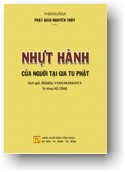

|
BuddhaSasana Home Page |
Vietnamese, with Unicode VU-Times font |
|  |
THERAVĀDA NHỰT HÀNH Bhikkhu VAṂSARAKKHITA Ấn bản 2006 (PL. 2550)
|
|
Phần III PHÁP TRÍCH LỤC GIẢI VỄ TÍCH NHÂN QUẢ TÓM TẮT Trong kinh có chép lời Đại Đức A-Nan nói: "Ta thiệt có nghe như vầy: Một thuở nọ, Phật ngự nơi tịnh xá, trong đám cây ông Kỳ-Đà Thái tử, vườn ông Cấp Cô Độc, tại thành Xá-Vệ, có một người thiếu niên tên Subha con của ông Todeyya đi đến chổ Phật ngự, vào đảnh lễ và bạch rằng: Bạch Đức Thế Tôn, tại duyên cớ nào mà con người sanh ra, - có kẻ chết sớm, người lại sống lâu; Bạch Đức Thế Tôn, tại duyên cớ nào mà con người sanh ra, lại có bực sang hèn khác nhau như vậy? - Người thiếu niên nầy! ấy cũng bởi nhân quả mà ra, cái nhân lành mà con người đã tạo, thì con người hưởng lấy; cái nhân dữ mà con người đã gây, thì con người mang lấy. Cái nhân là mẹ sanh ra con người cao sang hay là hèn hạ vậy. - Bạch Đức Thế Tôn, Ngài nói vắn tắt thế ấy tôi chưa được trọn hiểu cái lý nhân quả cao siêu, cúi xin Đức Thế Tôn giảng giải rộng thêm cho tôi được tột rõ lý nhân quả, bằng một cách dễ dàng hơn. - Người thiếu niên nầy! vậy ngươi ráng lắng nghe. - Bạch Ngài tôi hết lòng xin nghe. Phật bèn giải rằng: 1/- Người yểu tử: Đây, người thiếu niên nầy! kẻ nào trai hay gái, ham sự chém giết, quen thói sát sanh, không lòng nhân từ cùng loài động vật, bởi cách hành động chẳng lành ấy, sau khi thác, do cái nhân dữ đã gieo nên phải đọa vào địa ngục, nhưng nếu tái sanh lại làm người, thì chết yểu tử. 2/- Người trường thọ: Đây, người thiếu niên nầy! trái lại kẻ nào trai hay gái, không lòng chém giết, giữ giới sát sanh, tay không cầm khí giới, hằng sợ tội lỗi, có lòng nhơn từ cùng loài động vật, người đó, bởi cách hành động lành ấy, sau khi thác, do cái nhân lành đã gieo, nên được sanh trong thượng giới, nếu tái sanh lại làm người, thì được trường thọ. 3/- Người nhiều tật bệnh: Đây, người thiếu niên nầy! kẻ nào, trai hay gái, tánh tình hung dữ, thường đánh đập những loài động vật bằng tay, hoặc bằng cây, hoặc bằng khí giới, người đó, bởi cách hành động chẳng lành ấy, sau khi thác do cái nhân dữ đã gieo, nên phải đọa vào địa ngục, nhưng nếu tái sanh lại làm người, thì thường hay đau ốm. 4/- Người thường mạnh khỏe: Đây, Người thiếu niên nầy! trái lại kẻ nào trai hay gái, tâm tánh hiền từ, không hay đánh đập những loài động vật, bằng tay, hoặc bằng cây, hoặc bằng khí giới, người đó bởi cách hành động lành ấy, sau khi thác, do cái nhân lành đã gieo, được sanh trong thượng giới, nhưng nếu tái sanh lại làm người, thì thường được mạnh khoẻ. 5/- Người vô duyên: Đây, người thiếu niên nầy! kẻ nào trai hay gái, lòng hay nóng giận, bất bình, hét la, mỗi chút mỗi gắt gỏng, người đó bởi cách hành động chẳng lành ấy, sau khi thác, do cái nhân dữ đã gieo, phải đọa vào địa ngục, nhưng nếu tái sanh lại làm người, thì thường hay buồn bực, mặt mày xấu xa. 6/- Người hữu duyên: Đây, người thiếu niên nầy! trái lại kẻ nào trai hay gái, không lòng nóng giận, chẳng dạ bất bình, hét la, cằn nhằn, người đó bởi cách hành động lành ấy, sau khi thác, do cái nhân lành đã gieo, được sanh trong thượng giới, nhưng nếu tái sanh lại làm người, thì sắc mặt thường hay vui vẻ xinh đẹp. 7/- Người thế cô: Đây, người thiếu niên nầy! kẻ nào trai hay gái, thấy người khác giàu sang, danh tiếng, được thiên hạ kiêng vì yêu mến, tùng phục, mà sanh lòng ao ước ganh gổ, người đó, bởi cách hành động không lành ấy, sau khi thác, do cái nhân dữ đã gieo, phải đọa vào địa ngục, nhưng nếu tái sanh lại làm người, thì phải chịu thế cô quyền yếu. 8/ - Người quyền lớn: Đây, người thiếu niên nầy! Trái lại kẻ nào trai hay gái, không lòng ganh gổ, thấy người khác giàu sang, danh tiếng, được thiên hạ kính vì, yêu mến, tùng phục mà không lòng ao ước, ghét ghen, người đó, bởi cách hành động lành ấy, sau khi thác, do cái nhân lành đã gieo thì được sanh trong thượng giới, nhưng nếu tái sanh lại làm người thì được quyền cao thế trọng. 9/ - Người bần cùng: Đây, người thiếu niên nầy! kẻ nào trai, hay gái, không lòng bố thí vật ăn, nước uống, thuốc men, y phục, giường nằm, chỗ ở, dầu đèn cho các bậc Sa Môn, hay Bà la môn; người đó, bởi cách hành động chẳng lành ấy, sau khi thác, do cái nhân dữ đã gieo, phải đọa vào địa ngục, nhưng nếu tái sanh lại làm người, thì phải bần cùng khổ não. 10/- Người phú túc: Đây người thiếu niên nầy! kẻ nào trai, hay gái, thường hay bố thí vật ăn, nước uống, thuốc men, y phục, nơi nằm, chỗ ở, dầu đèn cho các bậc Sa môn hay Bà la môn; người đó, bởi cách hành động lành ấy, sau khi thác, do cái nhân lành đã gieo, được sanh trong thượng giới, nhưng nếu tái sanh lại làm người, thì được giàu có. 11/- Người hèn hạ: Đây, người thiếu niên nầy, kẻ nào trai hay gái, có lòng khinh rẻ, không chào hỏi những người đáng chào, không nhường chỗ cho những người đáng nhường; không nhường đàng cho những người đáng nhường, không kính trọng những người đáng kính trọng, người đó, bởi cách hành động chẳng lành ấy, sau khi thác do cái nhân dữ đã gieo, phải đọa vào địa ngục, nhưng nếu tái sanh lại làm người, thì phải chịu bề hèn hạ. 12/- Người cao sang: Đây, người thiếu niên nầy! kẻ nào trai hay gái, không lòng khinh rẻ, hay chào hỏi những người đáng chào, tiếp rước những người đáng tiếp rước, nhường chỗ ngồi cho những người đáng nhường, nhường đàng đi cho những người đáng nhường, kính trọng những người đáng kính trọng, người đó, bởi các hành động lành ấy, sau khi thác, do cái nhân lành đã gieo, được sanh trong thượng giới, nhưng nếu tái sanh lại làm người thì được sang cả. 13/- Người bất tài: Đây người thiếu niên nầy! kẻ nào trai hay gái, không tìm kiếm các thầy Sa môn hay Bà la môn để học hỏi như vầy: Bạch thầy, đạo đức là thế nào? Lành là thế nào? Dữ là thế nào? Điều nào đáng chê? Điều nào đáng khen? Điều nào nên làm? Điều nào không nên làm? Làm điều nào cho tôi được trong sạch và yên vui? Người đó bởi cách hành động chẳng lành ấy, sau khi thác, do cái nhân dữ đã gieo, phải đọa vào địa ngục, nhưng nếu tái sanh làm người thì phải chịu bề dốt nát. 14/- Người trí hóa: Đây người thiếu niên nầy! trái lại kẻ nào trai hay gái, có lòng tìm kiếm học hỏi nơi các bậc Sa môn hay Bà la môn như vầy: Đạo đức là thế nào? Lành là thế nào? Dữ là thế nào? Điều nào đáng khen? Điều nào đáng chê? Điều nào nên làm? Điều nào làm cho tôi trong sạch và được yên vui? Người đó bởi cách hành động lành ấy, sau khi thác, do cái nhân lành đã gieo, thì được thăng thượng giới, nhưng nếu tái sanh lại làm người, thì được thông minh trí tuệ. Người thiếu niên nầy, chúng sanh tạo nhân lành thì được hưởng quả lành; bằng gây nhân dữ, thì phải mang quả khổ: cái nhân là mẹ của chúng sanh. Chúng sanh được cao thăng hay bị sa đọa cũng do nơi cái nghiệp mà ra vậy. Nghe Đức Thế Tôn giải xong rồi, người thiếu niên Subha, con của ông Todeyya, bèn bạch cùng Phật rằng: Hoàn toàn thay, Đức Thế Tôn! cũng như kẻ bị trói mà được mở, như kẻ lầm đàng mà được thấy nẻo chánh, như kẻ mù mà được sáng; như nơi tối mà được đèn, Bạch Đức Thế Tôn, nhờ Ngài chỉ dạy cái lý nhân quả rất phân minh nên tôi mới được rõ thông đàng ngay nẻo vạy. Tôi tình nguyện Quy y Phật, Quy y Pháp, Quy y Tăng, xin Đức Thế Tôn nhận chịu cho tôi là kẻ thiện nam, kể từ nay cho đến trọn đời của tôi". Lấy đó mà xét thì chúng ta phải tin chắc rằng có nhân tất có quả, làm lành ắt gặp lành, làm dữ phải gặp dữ, một mảy chẳng sai. Vậy, nếu tin nhân quả báo ứng thì chúng ta nên mau mau hồi tâm hướng thiện Quy y Tam Bảo cho kịp thời. DỨT TÍCH NHÂN QUẢ TÓM TẮT * PHÁP THƯỜNG TỰ HÓA (Attānusāsanī) Đức Phật có giải trong kinh Saṃyuttanikāya rằng Natthi attasamaṃ pesaṃ: Không thương cái chi cho bằng thương cái TA. Tiếng gọi là TA ấy, Phạn ngữ gọi là ATTA hay là ATMAM là để chỉ về cái TÂM vậy. Bởi tâm nương theo thân, nên mới có suy nghĩ đến điều quấy sự phải, biết lẽ tà điều chánh. Thân và tâm nương lẫn nhau mới hay cử động được, nhơn đó mới hiệp thân và tâm lại gọi là TA vậy. Lẽ thường, thiên hạ đều thương cái TA hơn cả mọi vật, chẳng có một ai là ngươi mến yêu nhân vật nào khác cho bằng hoặc hơn cái TA. Chẳng cần nói đến người có nhan sắc xinh đẹp, dầu là kẻ tàn tật (cùi, phong, mù, điếc), họ cũng vẫn thương cái TA hơn hết. Cho đến chồng vợ, con cháu, vàng bạc, châu báu, đều là cái đáng thân thiết lắm, mà họ cũng chẳng thương hơn cái TA của họ được. Tất cả mọi người trên thế gian đều làm đủ các công nghệ, là họ chỉ mong được lợi ích cho cái TA. Như kẻ lao công, thầy thuốc, buôn bán, công chức, tư chức, các ty, các sở, các ngành, thì họ cũng đều trông được sự ích lợi cho cái TA trước. Cho nên Đức Phật Thích Ca có giải rằng: Không thương vật chi cho bằng thương cái TA, là lẽ như vậy. Con người làm những việc gì, là chỉ mong mỏi được sự hạnh phúc cho cái TA. Nhưng phần đông hằng để ý chuyên về điều danh lợi nhãn tiền, không lòng lo xét đến sự lợi ích hậu lai; có kẻ đã chẳng tìm làm việc phước đức, nhứt là không Bố thí, Trì giới, mà lại còn để cho thân, khẩu, ý xu hướng theo Nghiệp dữ, nên phải mang quả khổ từ đời nầy, đến kiếp sau, mà vẫn chưa tự tỉnh. Cách hành động như thế không gọi là thương cái TA được. Dường ấy Đức Phật thuyết là ghét cái TA vậy. Cho nên các bậc Thiện trí thức, khi đã rõ rằng: "Nếu TA thật thương TA, TA phải sớm mau hồi đầu hướng thiện, bỏ dữ về lành, tránh xa tam độc là tham, sân, si, không nên để cho phiền não, lấm nhơ đến tâm trí ta vậy. Vả lại sanh mạng con người và súc sanh vẫn không bền vững lâu dài; cái già, cái đau, cái chết hằng ở trước mắt. Nếu Ta dễ duôi hoặc tà kiến lầm tưởng rằng: Ta chưa chết sớm, thì làm cho Ta lại càng chìu theo cái vọng tâm, thi hành những nghiệp dữ chẳng sai. Nếu trong lúc Ta dể duôi lầm lạc ấy mà nhằm ngày mạng chung, dầu Ta có muốn tạo việc lành chăng nữa thì cũng khó làm cho kịp được, (bởi cái tâm chưa quen tạo nghiệp lành). Lại nữa cái chết là một cái khổ lớn nhứt. Như vậy lẽ nào ta còn dễ duôi, không lo tìm con đàng để tránh trước nghĩa là phải Bố thí, Trì giới, Tham thiền, hoặc niệm Phật cho tinh tấn, trong lúc sinh thời đây, đến khi cái chết đến, chắc phải loạn động, thì cái thân người ắt mất, phải bị đọa một trong 4 đường dữ (súc sanh, a-tu-la, ngạ quỉ, địa ngục) chẳng sai, khó trở lại làm người nữa được. (Hiệp theo trong Nho có câu: "Nhứt thất nhơn thân, vạn kiếp nan tái phục". Vậy Ta phải hết lòng thương tiếc đến Ta cho lắm, phải nhớ đến câu: vạn kiếp nan sanh đắc cá nhơn (muôn kiếp khó sanh đặng làm người). Cho nên Đức Phật có giải trong kinh Khuddanikāya rằng: Kiccho manussapaṭilābho, Nghĩa: Được luân hồi lại làm người là khó, được sống lâu là khó, được nghe Phật Pháp là khó, được gặp Đức Phật ra đời là khó. Về bốn điều khó trên đây Đức Phật có giải rằng: 1. Khó được sanh ra làm người, Chỗ nói khó được sanh ra làm người ấy có giải rằng: Chúng sanh được đầu thai làm người, thật là chẳng dễ, thật là rất khó. Chỉ phải một lòng tinh tấn làm việc phước đức cho nhiều, thì mới có thể trở lại làm người nữa được. Đã sanh ra làm người rồi, mà cũng khó được toàn vẹn, bởi con người có 4 hạng: 1. Manussanerayiko, là người như kẻ Địa ngục. Người như kẻ địa ngục là bởi kiếp trước làm việc chẳng lành, nhứt là phạm tôị sát sanh bị cắt tay hoặc cụt chơn, phải chịu điều khổ não hằng ngày. Hạng người như đây, gọi là như chúng sanh trong địa ngục, là người cũng có thân thể như ai, nhưng phải chịu lao khổ như kẻ ở địa ngục. Hạng người không thể hưởng vật thực ngon ngọt được, là do kiếp trước đã làm nhiều nghiệp dữ, nên nay bị đói khát khó khăn, cùng cực, không nơi nương dựa. Hạng người như đây gọi là như Ngạ quỉ, là người cũng có thân thể như ai, nhưng hằng bị đói khát, khổ cực như quỉ đói. Lại có người để dùng về việc khiêng, gánh, kéo, vác nặng nề cho kẻ khác, làm những điều tội lỗi, hằng bị người nạt nộ, đánh chưởi, bị sự mệt nhọc, buồn lo, không phân biệt phải quấy, không lòng hổ thẹn, lánh dữ làm lành. Hạng người như đây, gọi là súc sanh, là người cũng có thân thể như ai, nhưng phải làm những việc tội lỗi không lòng hổ thẹn ăn năn, chẳng khác nào súc vật. Hạng người rõ biết gốc ngọn, điều tội việc phước, tin lý nhân quả, vì hổ thẹn và ghê sợ tội lỗi, có lòng từ bi, tránh xa nghiệp dữ một lòng tinh tấn tu theo thập thiện. Người mà hành động như nói đây, mới gọi là người thật, đã có thân hình đều đủ, mà lại còn biết Bố thí, Trì giới vân vân... Bởi có nhiều duyên cớ khó sanh ra đặng làm người cho vẹn toàn, nên Đức Phật có nói: Kiccho manussapaṭilābho Nghĩa: Được sanh ra làm người là một sự rất khó, mà đã sanh ra làm người rồi muốn gìn giữ cho được sống lâu lại là một việc rất khó; vì sanh mạng của người và cầm thú rất là mỏng manh, thân mình rất mau hư hoại, tuy cố gắng trau giồi săn sóc thuốc men thì cái sống cũng chẳng đặng lâu dài. Lại nữa, dầu có sống lâu cũng khó mà nghe được giáo pháp của bậc Thiện trí thức giảng giải lẽ chánh lời ngay. Rất khó được dịp may mà gặp Phật ra đời. Chẳng có cái khó nào sánh bằng cái tu cho thành bậc Chánh giác, vì phải chí công chí đức, tu tròn đủ 30 pháp thập độ. Phương pháp chứng bậc Phật Toàn Giác có ba hạng: 1.- Paññādhika, do nhiều trí tuệ, tu 4 A-tăng-kỳ và 100.000 kiếp
mới chứng quả. Chỗ nói kiếp là chỉ về cái hiệu tuổi của trái đất. Phật có giải cho các thầy Tỳ-khưu rằng: Các thầy Tỳ-khưu nầy! tiếng nói Kiếp ấy chẳng phải đến trăm hoặc ngàn năm mà được đâu, chỉ phải hiểu bằng cách thí dụ mới đặng. Các thầy Tỳ-khưu nầy! Ví như một đống hột cải cao lớn một do tuần vuông vức bốn góc bằng nhau, đến 100 năm mới có một người đến lấy hột cải trong đống ấy ra, như vậy cho đến hết, mới gọi là một kiếp. Bốn A-tăng-kỳ là một Đại A-tăng-kỳ. Trong kinh Paramatthadīpanī atthakathā cariyā piṭaka có giải phân minh. Đây chỉ nói tóm tắt cho biết thời kỳ có 1 vị Phật Tổ ra đời chẳng phải là dễ, thật là vô lượng vô biên kiếp mới có. Chỉ phải cố gắng tu hành cho tinh tấn, trọn đủ pháp thập độ, mới có thể chứng quả Phật được, bằng tu còn thiếu sót một chút cũng khó thành bậc Chánh Đẳng Chánh Giác. Như lúa trong ruộng, nếu chưa đến kỳ thì cũng chưa có thể trổ bông, sanh hột được. Cho nên Đức Thế Tôn có thuyết rằng: Kiccho budhānamuppādo, nghĩa là cách ra đời của 1 vị Phật Tổ là một sự khó. Nay chúng ta sanh ra làm người, đã được mạnh khỏe thêm gặp Phật Pháp (Tam Tạng) là Phật ngôn rất quí báu ví như mình gặp được Đức Phật vậy, tức là mình đã khỏi 4 điều khó đã kể trên, là mình rất hữu phước. Đó là một dịp may rất quí cho chúng ta phải sớm mau hướng thiện: Bố thí, Trì giới, Tham thiền, niệm Phật, học hỏi chơn lý cho chu đáo ngõ hầu trau dồi thân tâm trong lúc hiện thời, cho kịp kỳ, chớ nên say mê theo lục dục làm cho mất cái thân người đi, thì ắt khó kiếm lại được. Ví như người có thuyền bè xe cộ, không lẽ để cho nó hư mục, tan rã, phải nên dùng nó để chở chuyên hàng hóa, đi buôn lấy lời; cũng như chúng ta có cái thân người không lẽ để cho nó già, để cho nó chết vô ích, cần phải dùng nó làm việc lợi ích nghĩa là phải sớm mau tỉnh ngộ, hồi đầu hướng thiện, lánh dữ làm lành, Bố thí, Trì giới, để hưởng cái quả vui trong đời này và kiếp sau. Lại nữa, những người có làm việc lành như là Bố thí, Trì giới, mới đáng gọi là người biết thương TA. Đức Phật có giải rằng: Attānañce piyaṃ jaññā, Nghĩa: Nếu bậc Thiện trí thức đã biết thương cái TA, thì phải gìn giữ cái TA cho được trong sạch. Hỏi: Nếu muốn cho cái TA được trong sạch thì phải làm như thế nào? Đáp: Người tại gia phải tu hạnh Bố thí, trì Ngũ giới, Bát giới tùy theo sức mình. Bậc xuất gia phải hành tròn phận sự là học Kinh Luật cho nhuần nhã và vâng giữ hành theo, mới gọi là trau giồi thân tâm được trong sạch. Kinh Saṃyuttanikāya có nói lúc Đức Phật Thế Tôn ngự tại thành Xá Vệ, có Đức vua Pasenadi Kosala ngự đến làm lễ Phật và bạch rằng: Tôi có suy nghĩ rằng, những người hành theo Tam nghiệp tội (thân, khẩu, ý ác), thì không gọi là thương TA đâu, dầu họ có nói thương TA, thì cũng gọi là ghét TA. Trừ phi những người hành theo Thập thiện, thì mới đáng gọi là thương TA cho vậy. Đức Thế Tôn đáp: Phải rồi, Đại Vương! Phải như vậy rồi, chúng sanh nào hành theo thân, khẩu, ý ác, thì chúng sanh đó đều là người chẳng phải thương cái TA, phải gọi là ghét cái TA vậy. Dầu là họ nói là thương cái TA, thì cũng gọi là ghét cái TA thật. Những chúng sanh nào hành theo Thập thiện, mới nên gọi là thương cái TA thật. Cớ ấy, những bậc Thiện trí thức, nếu đã biết thương cái TA, thì phải tránh xa Nghiệp dữ tu theo Thiện nghiệp cho tinh tấn, để hưởng hạnh phúc trong đời nầy và đời sau. Kinh Khuddakanikāya có nói: Nagaraṃ yathā paccantaṃ, Nghĩa: Con người phải trau giồi thân tâm cho được trọn lành, cũng như nhà vua cai trị cả nội địa và ngoại biên cho nghiêm nhặt. GIẢI RẰNG: Chỗ nói trau giồi thân tâm cho lành, như nhà vua sửa trị trong nước ấy, có so sánh và thí dụ như sau nầy: Lẽ thường nhà vua (lúc xưa) ngăn ngừa đạo tặc trong nước do theo 7 cách: 1.- Esikā: Đóng cột cừ cho sâu, cho thật chắc. Xứ nào mà nhà nước cai trị theo 7 điều ấy, thì nhơn dân sẽ được an cư, không bị giặc giã quấy rối, lại thêm đầy đủ bốn món vật thực như sau nầy: 1.- Có cây trái nhiều. Ví như các bậc tu Phật, nên trau giồi thân tâm theo 7 phép là: 1.- Saddho: Đức tin Tam bảo. - Nếu bậc tu Phật hành theo 7 phép ấy thì sẽ được an vui, không bị phiền não quấy loạn hằng đắc tứ định (sơ định, nhị định, tam định, tứ định). - Chỗ nói không nên bỏ qua thời kỳ ấy, là chỉ về 4 thời kỳ quý báu là: 1.- Thời kỳ đức Phật chứng quả, Nay hai thời kỳ trên đã qua rồi, nhưng chúng ta vẫn còn hữu duyên lắm, là chúng ta gặp được Phật Pháp, mà gặp Phật Pháp tức là gặp Phật vậy. Tuy Phật đã nhập Niết-Bàn, nhưng Ngài còn để Giáo Pháp lại. Pháp là lời Phật ngôn đã giáo truyền trong khi ngài còn tại thế, cho nên nói "Pháp" tức là Phật vậy. Dầu chúng ta không được sanh nơi Trung Ấn độ thì cũng ví như được sanh trong xứ ấy, vì xứ ta nay có đủ Tam Tạng (Kinh, Luật, Luận). - Phần đông chúng ta đều tín ngưỡng nơi Phật pháp, gọi là chúng ta có Chánh kiến, thêm có lục căn tròn đủ, thì chúng ta đều là người rất hữu phước. Vậy phải nên trau giồi thân tâm cho trong sạch, chẳng nên dể duôi bỏ qua việc lành. Phải tu thân, khẩu, ý, cho thanh tịnh, cũng như nhà vua sửa trị nhân dân, được an cư, có đào hầm đắp lũy, tích trữ khí giới, vân vân... - Lại nữa, nếu chúng ta là người biết thương cái TA, và muốn được hưởng quả Niết-Bàn, là nơi cực lạc trong đời vị lai, thì phải dứt bỏ việc dữ, hành theo điều lành, mới có thể hưởng sự an vui, y theo lời Phật có dạy rằng: Dunniggahassa lahuno, Nghĩa: Pháp tu cái tà tâm, là cái rất khó sửa dạy, là cái hay mê sắc dục, cho trở nên chơn tâm thì hằng được an vui đời đời, kiếp kiếp. GIẢI RẰNG: Tâm mà bị sự chẳng lành, nhứt là điều thương mến đã phát khởi lên, thì Nghiệp dữ ắt sanh, nhứt là phạm sát sanh, nói dối, hành ác, hoặc nói dữ, ắt bị mang quả khổ trong đời nầy và đời sau. Dầu quả báo chưa đến kịp trong kiếp hiện tại, nó cũng sẽ đến trong kiếp vị lai chẳng sai. Ví như con chó săn đuổi theo kịp con thịt rừng giờ nào, nó sẽ ăn tươi giờ ấy; ví như bánh xe lăn theo chân con bò kéo xe vậy, y như Đức Phật có giải trong kinh Khuddhakanikāya rằng: Manopubbaṅgamā dhammā, Nghĩa: Tâm chủ, tâm là lớn, thành tựu do tâm (thân, khẩu, ý làm những việc gì đều do nơi tâm đã nhứt định trước), nếu con người đã có tâm ác, thì ắt làm hoặc nói lời ác chẳng sai. Những hạng nầy hằng phải mang quả khổ, cũng như bánh xe lăn theo chân bò kéo xe vậy. Người nào được học hỏi, thông rõ nghĩa lý Phật Pháp và đã thọ trì theo, thì việc làm hoặc lời nói của người ấy đều là lành cả. Người ấy hằng được quả vui chẳng dứt, y theo lời Phật ngôn rằng: Manopubbaṅgamā dhammā, Nghĩa: Tâm là chủ, tâm là lớn, thành tựu do tâm (thân, khẩu, ý, làm những việc gì đều do nơi tâm lành), thì ắt làm hoặc nói việc lành chẳng sai. Những người hạng nầy hằng được những quả vui cũng như bóng tùy hình vậy. Cho nên những bậc thiện hữu trí thức hằng chuyên cần trau giồi tánh nết ở theo chánh pháp, cho thân khẩu, ý thường được trong sạch, nếu tâm đã trong sạch thì thân và khẩu đều trong sạch, ví như người cầm lái thuyền sáng trí lẹ làng thì có thể làm cho thuyền được đi ngay thẳng và mau đến bến, bằng một cách dễ dàng, không sợ lầm lạc. Nhưng sửa trị cái tâm cho ngay lành là một điều rất khó. Bởi cái tâm hằng tráo trở xao động bề này, thế kia, cho nên nói sự tu tâm chẳng dễ vậy. Y theo lời Phật rằng: Phandanaṃ capalaṃ cittaṃ, Nghĩa: Các bậc Thiện trí thức hằng tu cái vọng tâm, là cái tâm khó gìn giữ, khó ngăn cấm; khó sửa trị cho trở nên chơn tâm được. Ví như anh thợ làm tên, khó uốn sửa cây tên cho ngay thẳng được. GIẢI RẰNG: Đức Thế Tôn có giảng giải về cái tâm thật là rất khó trị. Bởi cái tâm hằng xao động, tráo trở, quyến luyến theo lục trần cho nên khó giữ gìn, ngăn ngừa cho nó yên lặng được. Dầu muốn cho nó ở yên trong một nháy mắt cũng khó đặng. Ví như đứa trẻ vừa mới biết ngồi, vừa mới biết đi, biết chạy, thì khó mà gìn giữ cho nó ở yên trong một oai nghi được lâu dài, hoặc ví như con bò không thuần, hay ăn lúa mạ nơi đàng chật hẹp, thì khó cho chủ ngăn ngừa, chặn giữ không cho nó ăn lúa mạ được. Tuy rằng cái tâm rất khó sửa trị, như đã nói trên, nhưng các bậc Thiện trí thức, tu cái tâm ấy được trở nên ngay lành, do nhiều phương pháp khác nhau. Ví như anh thợ làm cung tên, đi vào rừng đốn cây, lột vỏ xong đem về ngâm nước cơm, hoặc cho thấm dầu rồi đem hơ lửa cho cây ấy mềm mại, rồi đóng nọc, để uốn sửa cây ấy trở nên ngay thẳng được, làm thành cây tên ngay thẳng, bắn đâu trúng đó, làm cho tiếng đồn thấu đến tai vua, đức vua nghe danh anh thợ ấy có tài, làm cung tên rất khéo, bắn rất hay. Nhà vua bèn ngợi khen và trọng dụng anh thợ ấy và phong cho quyền cao tước cả. Việc nầy cũng ví như bậc Thiện trí thức có tài trí thông rõ Phật Pháp được sửa trị cái vọng tâm, bỏ dữ về lành dứt lòng phiền não, nương theo phép đầu đà, ẩn tu nơi rừng núi, thanh vắng, dùng đức Tin, lòng Từ bi và sự Tinh tấn đễ tu phép Thiền định và Trí tuệ để sửa trị cái tâm trở nên ngay lành, cùng suy cứu cho thấu rõ các sắc tướng đều là Vô thường, Khổ não, Vô ngã, vét sạch cái màn vô minh, tà kiến, đắc Lục thông chứng quả Bồ đề, là bậc đáng cho tất cả chúng sanh, trời người v.v... lễ bái cúng dường; ấy mới đáng là nhà tu Phật vậy. Phương pháp tu cái tâm cho trở nên trong sạch, thật là quí báu. Bởi cái tâm con người hằng quyến luyến theo 5 phép cái (Nīvaraṇadhamma). 1.- Tham luyến ngũ trần (Kāmachanda). Lẽ thường vàng y, nếu có 1 trong 5 vật: sắt, đồng, kẽm, chì và bạc lộn vào rồi thì làm cho mất sự tinh anh của chất vàng đi. Cũng ví như cái tâm của con người trước kia sáng suốt thanh tịnh đến khi bị 1 trong 5 phép cái nhiễm vào làm cho tâm bất tịnh nên tạo những việc gì đều chẳng được chơn chánh. Tuy vậy, các bậc Thiện trí thức, chẳng khi nào ngã lòng về việc sửa trị cái tâm theo phép Thiền định. Các bậc hành giả muốn tu phép ấy, trước hết phải chọn 1 trong 40 phép, cho hạp với đặc tính của mình, ví như người có bịnh, nếu muốn uống thuốc cho lành trước phải chọn lựa vị thuốc cho nhằm bịnh rồi mới nên uống, ắt sẽ được mau lành mạnh. Lại nữa, chẳng phải một vị thuốc mà cứu chữa cả thứ bịnh, cũng như một pháp Thiền định chẳng phải hạp với đặc tính của mọi người. Cớ ấy, bậc hành giả cần phải học cho thông rõ 40 đề mục Thiền định [1] rồi chọn lấy một đề mục, để quán tưởng mới có thể sửa trị cái tâm mau được trở nên trong sạch. Tiếc vì phạm vi quyển sách này không chứa đủ sự giải thích 40 phép thiền định, mặc dầu là giải tóm tắt cho vừa đủ chi tiết để giúp ích về việc suy cứu của chư thiện tín. Nếu muốn tu Thiền định nên xem "Pháp Chánh định" đã xuất bản rồi * GIẢI VỀ PHÁP BỐ THÍ Dānaṃ nāma iti lakkhaṇāni cāgacetanānañca viratidānañca deyyadhamma dānañcātīti. Giải rằng: Sự bố thí có ba tướng là: 1.- Tác ý dứt bỏ đem cho (Cāgacetanādāna). - Tác ý dứt bỏ đem cho là nói về những người có đức tín trong sạch, tính đem của ra cho. - Rứt của đem cho chỉ về người có đức tin trong sạch, có sự Hổ thẹn (Hiri), và Ghê sợ tội lỗi (Ottappa), tránh xa 5 điều oan trái (Pañca vera), tức là không sát sanh, không trộm cắp, vân vân... - Vật cho, là nói về cơm, nước, y phục, v.v... Cả 3 phép Cho ấy phát sanh trong tâm người, đều nuơng theo Trí tuệ chơn chánh và tâm không tham lam (Alobha). GIẢI RẰNG: Người có Trí tuệ xét thấy tội phước, lợi ích, vô ích, nghĩa là hiểu rằng: Bố thí, Trì giới, Tham thiền, vân vân... được phước hằng đem sự yên vui đến cho, như thế gọi là trí tuệ chơn chánh. Người rõ rằng có tội, nghĩa là: sát sanh, trộm cướp, vân vân..., thì phải mang quả khổ, như vậy, gọi là trí tuệ chánh kiến. Nhờ có trí tuệ chánh kiến và tác ý không tham lam (Alobhacetanā), đều đủ cả 2 nhân đó rồi mới tính bỏ của ra, đem cho. Cho mà được phước nhiều là do 3 tác ý, là: 1.- Tác ý trong sạch đầu tiên, tính cho các vật dụng, nhứt là cơm, nước
(Pubbacetanā). Cả ba tác ý đó gọi là đều đủ Tác ý (Cetanā sampadā). Đều đủ vật dụng (Vatthusampadā) là nói về cơm, nước, thuốc men, chỗ ngủ mà thí chủ đã tìm được theo lẽ đạo, nghĩa là: không vì sát sanh, không vì trộm cắp được mà cho. Thí chủ, người cho, có 2 chi: 1.- Đều đủ tác ý Thọ chủ, người lãnh, có 2 chi: 1.- Quả đều đủ (Phalasampadā), tức là bậc A-la-hán. Sự cho đều đủ cả 4 chi là: người cho hai chi, người thọ hai chi, thì được quả phước trong 7 ngày. Lại nữa, sự cho đều đủ theo 6 chi, sẽ được nhiều phước là: tác ý cho về cá thể (Puggalika: riêng một thể) có 3 chi, tác ý cho về đoàn thể (Saṅgha: nhiều người kết hợp thành đoàn) có 3 chi. Cá thể thí là (Paṭipuggalikadāna) cho theo ý muốn mình. Đoàn thể thí (Saṅghadāna) là dâng cúng đến Tăng. Cá Thể Thí (Puggalikadāna), có 14 cách: 1.- Cho đến loài cầm thú. Cá thể thí được nhiều phước, cần phải có đủ 6 chi, là: thí chủ, người cho có đủ ba tác ý. Thọ chủ, người lãnh, có tâm không tham, không sân, không si, hoặc có sự tinh tấn tu hành để dứt tham, sân, si. Đoàn Thể Thí là dâng cúng đến 7 bậc Tăng: 1.- Dâng cúng đến Tỳ-khưu Tăng, Tỳ-khưu-Ni Tăng, có Đức Phật tọa chủ. Lại nữa người dâng đến Tăng đó, cần phải chú tâm hướng ngay về bậc Thánh Nhơn, đừng tưởng đến phàm Tỳ-khưu. Khi đã thỉnh Tăng rồi, dầu được vị cao hạ hoặc thấp hạ hoặc Sa-di, cũng đừng bất bình buồn trách, phải giữ tâm bình đẳng, bực trung. Nếu bất bình buồn trách thì không gọi là Tăng thí. Đoàn thể thí là phép Tăng thí được nhiều phước báo hơn. Đức Phật có giảng thuyết đến Đại Đức Ānanda trong kinh Dakkhiṇāvibhaṅgasutta, trong dịp bà Gotamī, có tâm trong sạch, đem một cặp y dâng đến Đức Phật. Ngài không thọ lãnh, mà có tâm thương xót dạy bảo dâng cúng đến Tăng. Bà Gotamī, than khóc, đi tìm Đại Đức Ānanda. Ānanda mới vào bạch cầu xin Phật thọ cặp y. Đức Phật bèn giải rằng: Này Ānanda! Tăng thí có phước nhiều hơn các sự thí, dầu là đến thời mạt pháp, chỉ còn có Gotrabhū Tăng, là Tăng chỉ có mang y theo tay hoặc buộc cổ, làm nghề ruộng rẫy, mua bán, có vợ con. Song các thí chủ có đức tin làm việc Tăng thí, đến thỉnh Tăng từ bốn vị trở lên, chủ tâm hướng đến Thánh Tăng, thì cũng gọi là Tăng thí, được nhiều phước báo, kể A-tăng-kỳ khó tưởng tượng được. Này Ānanda! Ngươi cho 100 lần đến loài cầm thú cũng không bằng quả phước cho 1 lần đến người phá giới. Cho 100 lần đến người phá giới, cũng không bằng quả phước cho 1 lần đến người có giới. Cho 100 lần đến người có giới cũng không bằng quả phước cho 1 lần đến bậc xuất gia trong sạch. Cho 100 lần đến bậc xuất gia trong sạch cũng không bằng quả phước cúng 1 lần đến bậc Tu-Đà-Hườn (Sotāpanna). Cúng 100 lần đến bậc Tu-Đà-Hườn, cũng không bằng quả phước cúng 1 lần đến bậc Tư-Đà-Hàm (Sakadāgāmi). Cúng 100 lần đến bậc Tư-Đà-Hàm cũng không bằng quả phước cúng 1 lần đến bậc A-Na-Hàm (Anāgāmi). Cúng 100 lần đến bậc A-Na-Hàm, cũng không bằng quả phước cúng 1 lần đến bậc A-La-Hán (Arahanta). Cúng 100 lần đến bậc A-La-Hán cũng không bằng quả phước cúng 1 lần đến bậc Độc Giác Phật (Paccekabuddha). Cúng 100 lần đến bậc Độc Giác Phật cũng không bằng quả phước cúng 1 lần đến đức Phật Toàn Giác (Sabbaññūbuddha). Cúng 100 lần đến Đức Phật Toàn Giác, cũng không bằng quả phước cúng 1 lần đến Chư Tăng. Tăng thì có rất nhiều phước báo, như thế ấy. Có lời hỏi rằng: Vì sao Tăng thí được phước nhiều hơn hết? ĐÁP: Đức Thế Tôn xét thấy rằng, Tăng học hành tiếp nối nhau thọ trì Phật Pháp đến 5000 năm. Cớ ấy, Ngài mới giảng Tăng thí có nhiều phước báo. Lại nữa, dâng đến Tăng thì hằng phổ thông đến tất cả Tỳ-khưu Tăng, từ đức Phật cho đến vị Tỳ-khưu và Sa-di mới xuất gia. Phép thí lại chia có nhiều cách nữa là: 1.- Tài thí (āmisadāna): là cho của cải. Về người thí, có chia ra làm ba hạng. 1.- Nô bộc thí (dānadāso), là hạng người tự mình dùng vật quí,
đẹp mà đem những vật hèn mọn ra cho, cũng như cho kẻ tôi tớ. (Nô bộc thí
thì kiếp sau được vật hèn mọn). Vấn: Cho được phước nhiều do cái chi? Đáp: Do có Giới trong sạch, thí chủ là người cho có giới trong sạch, thọ chủ là người lãnh cũng có Giới trong sạch. Sự thí mà được phước nhiều, là nhờ thế lực của quả báo, nghĩa là: dâng cúng đến Tăng, cần phải chủ tâm tưởng đến 8 bậc Thánh. Chư Phật thường giảng giải về phép Bố thí, Trì giới, Tham thiền vì sự Bố thí là nhân dứt lòng tham, Trì giới là nhân trừ giận, Tham thiền là nhân diệt si mê. Lại nữa, người Bố thí, Trì giới, Tham thiền, hãy nên mong mỏi thiêu hủy cái lòng tham, sân, si để chứng Niết-Bàn dập tắt đều thống khổ, nếu cầu được làm người, hoặc Trời thì hằng bị cái khổ sanh, già, đau, chết, trong vòng luân hồi, hết kiếp nầy sang kiếp khác, vô cùng vô tận. Sự bố thí hằng đem quả vui trong cõi người là: 1.- Được làm bậc Chuyển Luân Vương (Cakkavattirāja) có 7 vật
báu: voi báu, ngựa báu, xe báu, ngọc báu, nữ báu, tướng soái báu và tổng
tài chánh báu. Đức Giáo Chủ có giải về 5 quả báo của sự bố thí cho quan Thủ Tướng Sīha nghe rằng, thí chủ: 1.- Thường được quần chúng thương yêu. Năm quả báo trên đây, hằng được thành tựu đến thí chủ trong đời nầy, do dứt lòng bỏn xẻn đem của ra cho. Lại nữa, những người mong tìm đều yên vui trong cõi người, trời và Niết-Bàn, hãy nên làm việc Bố thí, sau khi mạng chung sẽ được thọ sanh trong nhàn cảnh, như tích Đức Hoàng Đế Asoka sau nầy: Tích giải về tiền kiếp của Hoàng Đế Asoka. Trong thời quá khứ, tại thành Bārāṇasī, có người bán mật ong nơi chợ. Thuở đó có một vị Độc Giác Phật (Paccekabuddha) mang bịnh ghẻ, Đức Độc Giác Phật khác đi tìm mật ong để làm thuốc trị bịnh, Ngài bèn từ núi Gandhamādana đi đến thành Bārāṇasī. Có một cô tớ gái đi xuống bờ sông gánh nước, thấy Đức Độc Giác Phật đi đến, bèn hỏi thăm, rồi đưa tay chỉ quán bán mật ong rằng: người bán mật ong ở trong chỗ kia, xin Ngài đến đó đi. Cô lại suy nghĩ: nếu người bán không chịu cúng, ta sẽ đi đến lấy mật ong dâng cho được, sau sẽ tìm của trả cho họ, rồi cô vẫn đứng chờ, Đức Phật Độc Giác đi đến trong chợ, người bán mật xem thấy liền tỏ lòng hoan hỉ, dâng mật ong cho đến đầy bát, rồi chú tâm nguyện rằng: Bạch Ngài, do sự phước thí nầy, xin cho tôi sẽ làm một vị Hoàng Đế, có thế lực cao đến một do tuần (yojana) thấu trên hư không, 1 do tuần thấu dưới đất. Đức Độc Giác Phật đáp: nầy người Thiện nam! Cái quả nguyện vọng của người hãy được thành tựu như thế đi; xong rồi trở về núi Gandhamādana. Về phần cô tớ gái gánh nước, thấy vị Độc Giác Phật trở về, bèn bạch hỏi, Ngài được mật ong chăng? Đức Phật Độc Giác đáp: Atmā được mật ong rôi, người bán mật ong có dâng đến Atmā rồi, họ nguyện sẽ thành 1 vị Hoàng Đế trong Nam thiệm-bộ châu (Jambudīpa). Cô tớ gái nghe nói như thế, bèn đem cái khăn dâng đến Đức Độc Giác Phật, để lược mật ong, rồi nguyện sẽ thành vị Chánh Hậu của Hoàng Đế đó. Do phước thí và lời nguyện vọng của người bán mật và cô tớ gái đó, sau khi mạng chung rồi, cả hai đều được sanh trong cõi trời Đạo Lợi, ngự trong điện toàn bằng 7 báu, có ngọc nữ hầu hạ rất đông. Hưởng phước rất lâu, qua đến giáo pháp Đức Phật Thích Ca chúng ta đây người bán mật giáng sanh làm vị đông cung tên Asokakumāra trong số 101 vị hoàng tử của đức vua Bindusāra tại kinh đô Pātaliputta. Sau khi vua cha thăng hà, đức đông cung lên làm hoàng đế trong châu Nam Diêm-Phù-Đề. Thuở Phật lịch được 218 năm Đức Hoàng đế Asoka (A-Dục Vương) có thế lực rất lớn (do cái nghiệp lành Bố thí của Ngài đã tạo từ kiếp trước) thấu trên hư không 1 do tuần, dưới đất 1 do tuần có chư thiên từ núi Tuyết Sơn đem 16 thùng nước cùng các thứ trái cây quí, đến dâng mỗi ngày; chư Thiên trên các cõi đời đem dâng y ngũ sắc, y màu vàng, vải để lau tay, Long Vương dâng vật thơm để tắm, dồi, thoa, và thuốc để trị bịnh quí giá; loài két tha lúa mọc tự nhiên trong ao Chaddanta đến dâng mỗi ngày, v.v... Về phần cô tớ gái, cũng giáng sanh làm vị Chánh hậu của Hoàng đế Asoka, tên là Asandhimittā, mấy chỗ khớp xương tay và chơn của bà bằng thẳng trong sạch, không rõ rệt như thường nhơn, (trừ phi khi bà co vô), đó là nhờ phước mà bà đã tạo trong làm cô tớ gái gánh nước, chân đi, tay chỉ người bán mật ong cho Đức Phật Độc Giác. Trong thuở bà hưởng ngôi Chánh hậu, Đức Hoàng đế Asoka vào cung thấy bà đương dùng mía của Chư thiên đem dâng, miệng nhai mía mà vẻ mặt càng thêm tươi tốt, Đức Hoàng đế Asoka phán hỏi rằng: Hậu có biết mía của ai mà Hậu dùng đó chăng? Bà tâu: mía của hạ thần. Đức Hoàng đế Asoka nghe rồi phán: nhờ trẫm có nhiều phước báu, nên Chư thiên mới đem đến dâng cho. Chánh hậu tâu: đó là phước của hạ thần, nào phải của hoàng thượng. Đức Hoàng đế bất bình mà rằng: nếu hậu nói là phước của hậu, vậy ngày mai nầy trẫm sẽ dâng thực phẩm đến 500 vị Tỳ-khưu tăng, hậu phải có đủ 500 bộ tam y cho trẫm dâng cúng, bằng không sẽ bị trẫm hành hình. Bà nghe đức Hoàng đế phán như vậy, bèn kinh hãi, vì đức vua không bao giờ nói chơi, nếu lo không đủ, ngày mai ắt bị tội không sai. Tối đêm đó bà trằn trọc không an giấc, đến khuya nghe Chư thiên mách rằng, bà đừng lo, sự bố thí cái khăn đến Đức Độc Giác Phật để lược mật ong, trong tiền kiếp của bà, nó sẽ tự đem an vui đến cho bà, bà hãy an giấc, sáng ra gần bên mình bà sẽ có cái hộp đựng y, trong đó bà muốn bao nhiêu cũng có đủ. Bà Chánh hậu nghe Chư thiên mách bảo, bèn an giấc, sáng thức dậy, thấy có cái hộp gần bên, kéo cái y nầy rồi, thì ra cái khác, bà biết rằng sẽ được như ý muốn. Đến giờ đức Hoàng đế thỉnh 500 vị Tỳ-khưu Tăng ngọ thực, bèn bảo Chánh hậu đem y cúng; bà bèn rút y trong hộp ra, hết cái nầy đến cái khác, dâng đều đủ mà cũng vẫn còn hoài, không hết y. Đức hoàng đế thấy vậy mới rõ rằng bà là người đại phước, bèn gia tăng quyền tước thêm cho bà, rất yêu chuộng bà hơn khi trước. Cả hai vị: Đức Hoàng đế Asoka và bà Chánh hậu Asandhimittā, nhờ trong tiền kiếp đã có tâm tín thành, trong sạch làm việc bố thí, nên mới được thọ quả vui trong cõi trời và cõi người như đã giải. (Giải tích nầy cho thiện tín dùng trí tuệ suy xét và ghi nhớ rằng: sự Bố thí không luận là ít hay nhiều, chỉ vì tâm trong sạch hoan hỉ, thành kính cúng dâng, thì chắc được phước báu khó tưởng tượng được). * TÍCH JĀṆUSSOṆI BRĀHMAṆA Bhante bho Gotama kira: Đã có nghe như vầy: Có một người Bà la môn tên là Jāṇussoṇi đến bạch hỏi Đức Phật như vầy: Chúng tôi lo làm các việc lành, nhứt là Bố thí, Trì giới rồi hồi hướng đến những quyến thuộc (cha mẹ, ông bà, vân vân...)đã quá vãng; các quyến thuộc chúng tôi đó, đến thọ lãnh quả phước đó được chăng? Đức Phật đáp: Ṭhāne kho aṭhāne kho brāhmaṇa - Nầy người Bà la môn, đáng được cũng có, không đáng được cũng có: 1.- Chúng sanh đã làm nghiệp dữ do thân, khẩu, ý, đến khi tan rã ngũ uẩn, phải thọ sanh trong địa ngục, chịu nhiều điều khổ não nặng nề, vì ác quả đó, nên không có thể đến thọ lãnh được phước của thân quyến hồi hướng cho. 2.- Chúng sanh đã làm tội do thân, khẩu, ý, sau khi mạng chung phải bị luân hồi làm cầm thú, có thực phẩm riêng theo loài của chúng nó, chúng nó cũng không thọ hưởng được phước của thân quyến hồi hướng cho. 3.- Chúng sanh không làm tội do thân, khẩu, ý, sau khi thác được sanh trong cõi trời, sẵn có thực phẩm tự nhiên, không cần thọ thực phẩm thân quyến Bố thí hồi hướng cho cũng không thành tựu. 4.- Chúng sanh đã làm tội bằng thân, khẩu, ý, sau khi quá vãng, đầu thai trong loài Ngạ quỉ hằng chịu đói cơm, khát nước, phải trải đi lãnh phần phước, khi có thân quyến Bố thí hiệp theo lẽ đạo, rồi hồi hướng cho, Ngạ quỉ hoan hỉ thọ lãnh vật thí đó biến thành thực phẩm, hưởng rồi được sự an vui, khỏi đường Ngạ quỉ, đi thọ sanh trong nhàn cảnh (cõi người và cõi trời). Đức Phật vừa thuyết xong về cách đáng thọ lãnh cùng không đáng thọ lãnh, người Bà la môn bèn bạch hỏi thêm rằng: Nếu người đã làm phước hồi hướng mà các Ngạ quỉ không được lãnh, thì phước đó trú nơi nào? Là của ai? Ai đem đi? Đức Phật đáp; Nầy người Bà la môn, Ye sattā: chúng sanh nào còn bị xoay vần trong vòng luân hồi, thì không khỏi sa đọa trong đường Ngạ quỉ, chúng sanh đó sẵn lòng hoan hỉ thọ lãnh phần phước, vì còn phải chuyển sanh nhiều đời nhiều kiếp, hằng luân hồi làm thân quyến cùng nhau vô cùng vô tận kiếp... Nếu quả Bố thí không thấu đến hạng Ngạ quỉ, thì về phần thí chủ, vì thí chủ đã có tác ý trong sạch trong khi cho. Cớ ấy, thí chủ là người được quả lành trước hết tất cả Ngạ quỉ. Lại nữa, những Ngạ quỉ thọ lãnh phần phước là hàng Ngạ quỉ Dabajīvī, có tâm hoan hỉ trong việc phước, các hàng khác không có thể thọ lãnh được. Về phần Ngạ quỉ Paradattūpajīvī đáng thọ lãnh cũng phải hiệp theo 3 chi: 1.- Thí chủ phải dâng cúng đến Tăng, hoặc bậc tu hành trong sạch. Vấn: Phải hồi hướng trong lúc nào? Đáp: Ngay trong khi dâng cúng vừa rồi, nếu hồi hướng trong thời khác, không được kết quả, vì trong lúc đó hàng Ngạ quỉ sẵn chờ để thọ lãnh, ví như những người nghèo đói đến xin ăn mà thí chủ không cho, khi họ bỏ ra đi khỏi, dầu có cho cũng không có người lãnh. Lại nữa, Bố thí đến người phá giới, giới không trong sạch, hoặc không giữ giới, cũng không được thành tựu đến Ngạ quỉ. Vả lại, đã dâng cúng đến bậc có phẩm hạnh, có Ngạ quỉ đến chờ, mà thí chủ không hồi hướng, hàng ngạ quỉ cũng không có thể thọ được, như trong tích ngạ quỉ quyến thuộc của đức vua Bimbisāra (Tần-Bà-Sa), Ngài đã dâng cúng đến chư Tăng trong ngày đầu mà quên hồi hướng, quả phước cũng không thành tựu đến Ngạ quỉ được. Qua ngày thứ nhì, được nghe đức Phật giảng thuyết xong, bố thí thêm, rồi hồi hướng, các hàng Ngạ quỉ mới hoan hỉ thọ lãnh được. Trích dịch trên đây cho thiện tín suy xét để làm phước đến những quyến thuộc đã quá vãng, cho đúng theo lời Phật dạy, hầu được thành tựu đến hàng Ngạ quỉ. Sự bố thí có 2 phép nữa là: 1.- Cho bằng cách tế độ (Saṅgahavasena). Cho bằng cách tế độ, là cho đến kẻ nghèo hèn, đói khát, không nơi nương dựa, hoặc người mang bịnh tật hoặc loài cầm thú, do lòng thương xót, mong giúp người trong cơn tai nạn. Người cho đến cầm thú, hằng được quả báo 100 kiếp nghĩa là: 1.- Được sống lâu. Năm quả báo đó hằng phát sanh đến thí chủ trong mỗi kiếp. Cho đến người phá giới, không có giới, được quả báo đó trong 10.000 kiếp. Cho đến người có giới được quả báo 1.000.000 kiếp v.v... Cho bằng cách cúng dường, nghĩa là cung cấp phụng dưỡng cha mẹ, ông bà, ông thầy có thi ân bố đức đến mình, hoặc dâng cúng đến các bậc Sa môn, Bà la môn tu hành chơn chánh, đến người trì giới trong sạch, đều gọi là cúng dường cả. Vấn: Cho bằng cách cúng dường và tế độ cách nào phước nhiều hơn? Đáp: Cách cúng dường được phước nhiều vô số kể. Vấn: Cái chi là vật thí? Đáp: Của cải, nhứt là cơm, nước, y phục, là vật thí, tác ý tính dứt của ra (cāga) là nhân, đem cho (dāna) là quả. Vấn: Bố thí được quả báo thế nào? Đáp: Được 2 quả báo: trong kiếp nầy và trong đời sau. * GIẢI VỀ PHÁP THÍ Phật có giải cho đức Đế Thích (Kosiyamar-indradhirāja) nghe rằng: Sabbadānaṃ dhammadānaṃ jināti, - Pháp thí thắng tất cả sự thí. Lời chú giải: Nếu người dâng cúng y quý giá, đến đức Phật Toàn Giác, đức Độc Giác và chư Thinh Văn Giác hội họp nhau đông đúc, ngồi kề nhau đầy đủ trong khắp cả thế giới, cho đến cõi trời Phạm thiên, quả báu của sự Bố thí đó, cũng không sánh bằng Pháp sư thuyết 4 câu kệ. Sự thí y đó không bằng 1 phần kệ ngôn mà người chia ra 16 phần, rồi lấy mỗi phần chia ra 16 phần nữa. Sự thuyết Pháp, hoặc dạy Pháp, hoặc nghe Pháp, là điều cao thượng như thế. Người nào làm đầu dẫn dắt trong sự nghe Pháp thì được quả báu rất nhiều, vô số kể, không sai. Pháp thí, dầu chỉ có tâm hoan hỉ theo 4 câu kệ cũng còn quí hơn tài thí mà người đem thực phẩm quí giá để đầy trong bát, dâng đến bực A la hán, hơn thí thuốc (sữa, dầu...), hơn thí chỗ ngụ (nhà, tịnh thất, chùa...) như ông triệu phú gia Cấp Cô Độc, đã tạo Bố Kim tự, dâng đến Chư Tăng có Đức Phật chủ tọa. Cớ sao? Vì người làm phước như thế là nhờ được nghe Pháp, bằng không, cũng không làm được, vì nếu chúng sanh không được nghe Pháp, dầu là một muỗng cháo, một vá cơm cũng không có thể thí được, cho nên gọi Pháp thí là cao thượng hơn tất cả sự thí. Lại nữa, trừ phi Đức Phật Toàn Giác, tất cả chư Tỳ-khưu, nhứt là Đại Đức Xá-Lợi-Phất (Sārīputta) có nhiều trí tuệ, có thể đếm giọt mưa từ trên hư không rớt xuống trong một kiếp, mà cũng không chứng đạo quả được: nhờ nghe Pháp của Đại Đức Assaji rồi mới đắc Tu-đà-hườn quả, sau nghe thêm Pháp của Đức Phật mới chứng A-la-hán quả. Cớ ấy, Đức Thế Tôn giải rằng: Pháp thí thắng tất cả sự thí. Hơn nữa, dầu là những vị thực phẩm rất quí của Chư thiên, cũng đều là cái duyên dẫn dắt chúng sanh, say đắm trong đường sanh tử, phải chịu nhiều điều khổ não thôi. Về phần vị của Pháp, như 37 pháp Bồ đề (Bodhipakkhiyadhamma) hoặc 9 pháp Thánh đều là quí trọng hơn cả. Nhơn đó Đức Thế Tôn thuyết rằng: Vị của Pháp thắng tất cả vị. Sự ưa thích nhiều lẽ, như ưa thích vợ con, ưa thích gái đẹp, trai xinh, ưa thích đờn kèn, uyển sáo, vân vân... Các sự thích đó đều là cái duyên níu kéo chúng sanh trong nẻo luân hồi, phải mang quả khổ vô cùng vô tận. Trái lại, sự ưa thích phát sanh trong tâm của Pháp sư, hoặc người nghe Pháp, làm cho thân tâm dường như bay bổng, cả châu thân nhẹ nhàng, mát mẻ, cả mình mọc ốc cũng có sự ưa thích đó tức là điều phỉ lạc, có thể đem người ra khỏi vòng sanh tử được; ưa thích như thế gọi là quí trọng hơn cả sự ưa thích, cho nên Đức Phật giải rằng: Sự ưa thích trong Pháp, thắng tất cả sự ưa thích. Lại nữa, chư vị A-la-hán gọi là cao quí hơn cả, vì không còn phải chịu mang khổ luân hồi nữa, lẽ đó đức Thế Tôn mới thuyết: Sự dứt lòng tham muốn thắng tất cả khổ não. Thí pháp chia ra có 2 phần nữa là: 1.- Thí pháp ở trong đời (Lokiyadhamma-dāna), là thuyết pháp chỉ
dạy con đường người và trời thì được phước ít, vì là Pháp dẫn dắt chúng
sanh xoay vần trong biển khổ. a) Khổ đế (có cái thân nầy là khổ). Giải rằng: Người nghe cần phải hết lòng thành kính mà nghe, nghe rồi phải tìm hiểu bằng trí tuệ chơn chánh để thật hành theo, như thế mới gọi là hữu ích. Vấn: Cái chi gọi là Pháp? Đáp: Trí tuệ chánh kiến gọi là Pháp. Vấn: Trí tuệ chánh kiến nói về cái chi? Đáp: Là trí tuệ hiểu biết đúng đắn, tin chắc rằng cái nghiệp lành hoặc dữ mà mình đã tạo, nó là của mình, mình phải chịu ảnh hưởng của các nghiệp đó. Nghĩa: nếu đã làm lành thì hưởng quả vui, làm dữ phải mang quả khổ, vui hoặc khổ cũng do nơi mình, chẳng có một ai ban phước hay cho tọi được cả. Lại nữa, thí chủ đừng vì lòng ham muốn mà cho, nghĩa là đừng mong sẽ được tái sanh làm người cao sang quyền thế hoặc được thọ sanh trong cõi trời, chỉ phải cầu nguyện ra khỏi vô minh, ái dục là điều ô nhiễm buộc trói chúng sanh dính mắc trong sông mê biển khổ. Cho nên trong khi Bố thí, hãy chú tâm nguyện rằng: Idaṃ vata me dānaṃ āsavakkhayāvahaṃ hotu anāgate: Xin cho phước thí mà tôi đã trong sạch làm đây, hãy là món duyên lành, để dứt khỏi những điều ô nhiễm ngủ ngầm trong tâm, trong ngày vị lai. (Chư thiện tín nên suy xét theo chân lý để tìm làm việc thí Pháp cho thường và nhớ câu phát nguyện giải thoát trên đây, ngỏ hầu mau được dứt khỏi các điều thống khổ). * GIẢI VỀ TÍCH THỌ TRÌ NGŨ GIỚI Sambahulā kira samuddavāṇijā nāvāya samuddaṃ pakkandiṃsu - Được nghe rằng: Có đoàn người buôn biển đem nhau xuống thuyền đi ra biển, buồm gặp gió ghe lướt tới, mau như tên bắn. Được 7 ngày, bị trận bão ở giữa biển, gió to sóng lớn, thuyền hư, nước vào gần đầy. Khi chiếc thuyền gần chìm, phần đông người đều khấn vái chư thiên mong cầu được cứu vớt, rồi chỉ than khóc mà chịu. Có một người suy nghĩ: trong lúc kinh hãi nầy: ta có nơi nào nương tựa chăng? Liền nhớ đến trước khi ra đi, ta đã có thọ Quy, Giới, trong sạch, bèn ngồi bán dà ở giữa đám đông người đó, ví như hành giả ngồi công phu Thiền định, kẻ khác trông thấy tìm hỏi cái nhân không lo sợ đó. Người nọ đáp: Nầy các anh! trong ngày xuống thuyền đi đây, tôi được dâng cúng đến chư Tăng, đã có thọ Giới, hoàn toàn, nên tôi mới không lo sợ. Các người kia bèn hỏi: Thưa ông, Quy và Giới đó ông có thể cho đến người khác được chăng?Đáp: Được. - Vậy, xin ông từ bi cho Giới đến chúng tôi. Người đó bèn chia ra làm 7 đoàn, mỗi đoàn 100 người, rồi đọc Quy Giới cho tất cả người đó thọ trì. Đoàn thứ nhứt thọ Quy Giới trong khi nước ngập đến chân; đoàn thứ nhì, nước đến đầu gối; đoàn thứ ba nước đến háng; đoàn thứ tư nước đến rúng; đoàn thứ năm nước đến ngực; đoàn thứ sáu nước đến vai; đoàn thứ bảy, nước sắp vào miệng. Khi cho Quy Giới đều đủ rồi, người đó bố cáo lên rằng: ngoài Quy Giới ra các anh chẳng có cái chi làm nơi nương nhờ đâu, chỉ phải nên niệm tưởng đến Quy Giới đi. Cả thảy 700 người phải thác trong nơi giữa biển, đều được thọ sanh trong cõi trời Đạo lợi, vì nhờ được thọ trì Quy Giới trong lúc sắp mạng chung, các cung điện liền phát sanh lên cho Chư thiên đó, Điện cao 100 do tuần cho vị trời Ācariya ở chính giữa, các điện Chư thiên kia, thấp hơn hết bề cao 12 do tuần. Tất cả Chư thiên, đều nhớ tưởng tìm xét về nguyên nhân đi thọ sanh, liền hiểu rằng: Cái phước mà ta được đây, đều nhờ nơi ông thầy dẫn dắt, rồi đồng nhau xuống đảnh lễ Phật để tỏ lời ngợi khen công đức của ông thầy. Tích nầy có giải trong kinh Devatā Saṃyutta. Tiếp theo tích trên đây, trong quyển Pāli Sabbhisuttadevatāsaṃyutta, rút trong kinh Saṃyutta nikāya có giải rằng: Chư thiên đó có hào quang chói lòa, làm cho trọn cả Kỳ Viên sáng ngời, rực rỡ, trong giữa đêm vào đảnh lễ Đức Phật rồi đứng nơi phải lẽ. Vị trời thứ nhứt: Bạch với Đức Phật bằng kệ ngôn rằng: Sabbhireva samāsetha, Người nên ngồi chung với bực Thiện trí thức, nên có sự ưa thích cùng với bậc Thiện trí thức, điều tốt lành tiến hóa sẽ có đến người đó, không có sự xấu xa đâu, vì người đó được biết rõ các Pháp, tức là Ngũ giới của các bậc Thiện trí thức. Vị trời thứ nhì đọc tiếp bài kệ: Sabbhireva samāsetha, Người nên ngồi chung với bực Thiện trí thức, nên có sự ưa thích cùng với bậc Thiện trí thức, người đó hằng có Trí tuệ vì được rõ các pháp tức là ngũ giới của các bậc Thiện trí thức, chẳng phải được do nơi người khác đâu. Vị trời thứ ba đọc: Sabbhireva samāsetha, Người nên ngồi chung với bậc Thiện trí thức, nên có sự ưa thích cùng với bậc Thiện trí thức, người đó hằng không buồn rầu, trong giữa hạng người có sự buồn rầu, vì được biết rõ các Pháp, tức là Ngũ giới của các bậc Thiện trí thức. Vị trời thứ tư đọc: Sabbhireva samāsetha, Người nên ngồi chung với bậc Thiện trí thức, nên có sự ưa thích chung với bậc Thiện trí thức, người đó hằng có sự phát đạt trong giữa hàng quyến thuộc, vì được biết rõ các pháp, tức là Ngũ giới của các bậc Thiện trí thức. Vị trời thứ năm đọc: Sabbhireva samāsetha, Người nên ngồi chung với bậc Thiện trí thức, nên có sự ưa thích cùng với bậc Thiện trí thức, chúng sanh được biết rõ các pháp tức là Ngũ giới của các bậc Thiện trí thức, thì hằng đi đến nơi nhàn cảnh. Vị trời thứ sáu đọc: Sabbhireva samāsetha, Người nên ngồi chung với bậc Thiện trí thức, nên có sự ưa thích cùng với bậc Thiện trí thức, chúng sanh được biết rõ các Pháp, tức là Ngũ giới của các bậc Thiện trí thức, rồi hằng được yên vui lâu dài. Kế tiếp, có vị trời khác bạch hỏi Đức Thế Tôn cầu Ngài Từ bi giải rõ trong các lời chúng tôi đó, lời nào thanh nhã hơn. Phật đáp: tất cả lời của các ngươi đều là lời thanh nhã hết, tùy theo cách điệu, nhưng các ngươi chờ nghe, xem lời Như Lai một lần, rồi Ngài ngâm kệ rằng: Sabbhireva samāsetha, Người nên ngồi chung với bậc Thiện trí thức, nên ưa thích cùng với bậc Thiện trí thức, người được biết rõ các Pháp tức là Ngũ giới của các bậc Thiện trí thức rồi, hằng được thoát khỏi tất cả thống khổ. Lại nữa, thuở Trung Giác thời (Majjhimabodhikāla), Đức Phật ngự tại quận Pātali, Ngài có giải về 5 quả báo của Ngũ Giới ở giữa phần đông thiện tín trong quận Pātali đó, (Kinh Mahāparinibbānasutta Dīghanikāya mahāvagga) rằng: Pañcime gahapatayo ānisaṃsā sīlavato sīlasampadāya - Nầy các ông trưởng giả! quả báo của người trì giới, có giới đều đủ, có 5 là: 1.- Hằng được nhiều của cải, vì nguyên nhân không dể duôi. (Chư thiện tín nên suy xét về quả phước của sự Trì giới trên đây, rồi thành tâm hoan hỉ trong phép thọ Trì giới cho trong sạch để hưởng quả vui trong kiếp nầy và trong đời vị lai). * PHÁP NIỆM PHẬT THAM THIỀN Niệm Phật là để lòng ghi nhớ danh hiệu Phật [3], không tưởng nghỉ đến sự chi khác chỉ thâu nhiếp cái vọng tâm đừng cho năm pháp cái [4] ám-muội, mà đèn tâm phải lù lờ, không nảy sanh cái thắng lực của chánh định được. Bởi chưng cái tâm hằng bị năm phép cái làm cho nó phải lay động, khó nổi an trú trong đối tượng thiền-định, nên không nhớ việc nào được đúng đắn, không thấu việc chi được rõ-rệt, ví như nước xao động vì gió, nên trông vào nước nào ai thấy mặt được rõ rệt. Phép niệm Phật là gom ý vào một đối tượng cho tâm yên lặng, vững vàng không cho duyên theo ngũ trần, lục dục, để lần lần bước vào con đường Chánh định, dẫn dắt ta ra khỏi vòng sanh tử luân hồi. Niệm Phật giờ khắc nào cũng được, song ở chốn đô hội, ban ngày không yên tịnh, khó cho tâm an trú, chỉ có ban đêm thanh vắng mới tiện bề cho hành giả công phu. Ban đêm lúc nào niệm Phật cũng được, nhất là mấy giờ sau đây: 1) Đầu hôm, sau thời tụng kinh tối: như trong mình mệt mỏi thì ngồi niệm 5, 10 phút đồng hồ, rồi nằm niệm cho đến khi ngủ quên. 2) Lúc canh tư, canh năm, khoảng 3, 4, 5 giờ sáng (sau khi nghỉ một giấc đã khỏe). Khi ngồi niệm Phật, trước hết: A.- Phải suy xét mười tội Ngũ Trân như lời Phật giảng sau đây: 1) Ngũ trần ví như khúc xương bỏ rơi trên đất. Người sa mê ngũ trần cũng như con chó gậm khúc xương ấy, nó chỉ liếm lấy nước miếng nó, đã chẳng được sự lợi ích mà còn thêm mệt sức. 2) Ngũ trần ví như miếng thịt thúi. Người sa mê ngũ trần cũng như bầy quạ đậu trên thây ma trôi từ trong sông ra biển khơi. Bầy quạ đậu trên thây ma, có thịt ăn, nước uống; mãi mê theo sự ăn uống không quan tâm đến sự hại sẽ tới khi cái thây ma bên dưới bị nước biển đánh rã, trên thì quạ ăn hết thịt chỉ còn lại bộ xương. Bộ xương nặng chìm xuống đáy biển; bầy quạ bây giờ giựt mình dòm lại thì ô hô! nào thấy bờ bực là đâu, chỉ bay chơi vơi chốc lát, rồi cũng phải theo số phận bộ xương mà sa xuống biển làm mồi cho cá. 3) Ngũ trần ví như cây đuốc rơm. Người sa mê ngũ trần cũng như kẻ cầm cây đuốc rơm đang cháy mà đi ngược gió, bị lửa táp cháy tay mà không chịu rời cây đuốc ra, thật rất khổ sở. 4) Ngũ trần ví như lò lửa đang cháy. Người sa mê ngũ trần cũng ví như kẻ bị vào lò lửa, phải bị phỏng mình cháy da đau đớn vô cùng. 5) Ngũ trần ví như giấc mộng bởi hằng biến đổi Vô thường. 6) Ngũ trần ví như vật mượn của người, bởi vật mượn của người nên không dùng được lâu dài. 7) Ngũ trần ví như trái cây có chất độc. Người sa mê ngũ trần cũng như kẻ ăn lầm trái độc phải khổ vô cùng, 8) Ngũ trần ví như dao với thớt, dao bằm xuống thớt lâu ngày cả dao và thớt đều bị mòn và sứt mẻ. Người say mê ngũ trần cũng như kẻ bị phạm khí giới, mỗi ngày đau khổ không xiết kể. 9) Ngũ trần ví như kiếm và lao, có ngày phải lụy vì nó. Người sa mê ngũ trần như kẻ bị thương tích nặng, nếu không thác thì cũng đau khổ, rên xiết như trong cơn hấp hối. 10) Ngũ trần ví như đầu con rắn độc. Người sa mê ngũ trần cũng như kẻ bị rắn mổ, nếu không thiệt mạng thì cũng bị nọc hành nhức nhối vô cùng. Người sa mê Ngũ trần hằng chịu tiếng xấu xa, là kẻ thấp hèn. Ngũ trần là Pháp để cho kẻ thấp hèn lợi dụng. Ngũ trần ví như phân để cho dòi đục, như nước thúi để cho heo tẩm. Suy xét như vậy sẽ thấy rõ ngũ trần chỉ có lợi rất ít, mà khổ quá nhiều. Chẳng nên quyến luyến và phải đem cả tinh thần nghị lực để đạt đến bực nhập định. B.- Phải tham cứu ba đề mục Thiền định là: 1) Niệm tâm đại từ: nguyện cho chư Thiên, các gia quyến và tất cả chúng sanh ở chung quanh ta đều được an vui, chẳng có chi khổ não cả. 2) Niệm sự tử: "Ta sẽ chết, chắc như vậy; hoặc là sự chết sẽ đến cho ta chẳng sai". 3) Niệm vật dơ nhớp: Tử thi (xác chết) Niệm tâm đại từ để trừ lòng sân hận; niệm sự tử để tránh khỏi tà mạng và tu hành được tinh tấn; niệm vật dơ nhớp để trừ tham lam. Trong ba đề mục trên đây, ta nên lựa một đề mục nào tùy sở thích đặng niệm mỗi ngày cho nó thâm nhập vô tâm, có đức từ bi, thấy rõ lý vô thường và lần lần hết ưa mến và tâng trọng cái thân tứ đại giả hiệp mà phải bị ngũ trần lôi cuốn * CÁCH NIỆM PHẬT Muốn niệm cả 10 hiệu Phật liên tiếp nhau cũng tốt vậy. Thí dụ: "Á rá hăng"… Tâm niệm, trí phải nhớ nghĩa hiệu ấy như vầy: "Đức Thế Tôn hiệu Á-rá-hăng, vì Ngài đã xa lìa các tội lỗi, và tiền khiên tật rồi nên thân và khẩu của Ngài đều được trọn lành. Ngài đáng cho chúng sanh lễ bái cúng dường và Ngài không làm việc tội lỗi trong nơi khuất lấp" Hành giả nhớ niệm Đức của Phật, tâm sẽ dần dần xa lìa phiền não, an trú theo Đức của Phật và luôn cả năm pháp cái là: tham sắc, oán giận, hôn trầm, phóng tâm, hoài nghi, cũng do đó mà êm lặng. Trước hết tập niệm độ nửa giờ rồi lần lần tăng lên một, hai giờ (lâu chừng nào càng tốt). Hành giả chánh niệm [5] được tinh tấn thì triệu chứng "tầm, sát, phỉ" sẽ phát sanh, làm cho thân tâm khắn khít theo hiệu Phật mà vào bậc "Cận định". Triệu chứng tức là năm cách vui vẻ phát sanh ra trong mình như sau này: 1.- Cách no vui: Da thịt đều nổi ốc. Nếu có năm cách no vui nói trên đây, thì hành giả được vào gần sơ định. * THAM THIỀN Chánh định là phương pháp tối cao để thâu nhiếp cái vọng tâm an trú vào một đối tượng lành, dẹp vọng tưởng, gom cả lục căn cho yên lặng, ấy là nguyên nhân phát sanh trí tuệ. Sự thâu nhiếp cái tâm buộc vào một chỗ, cần phải nương theo phép Chỉ tịnh [6] và phép Minh sát [7]. Nhưng buộc vào hai phép ấy thì cái tâm thường hay loạn động, vọng chuyển. Tuy nhiên hành giả chẳng nên vì đó mà thối chí, ngã lòng: chỉ phải nhứt tâm tinh tấn, buộc chặt nó vào đề mục chánh định cho đến khi an trú, thì sự giải thoát ở ngay trước mắt. * NĂM PHÉP CÁI LÀ: 1.- Tham muốn (Kāmachanda), là lòng ưa thích, quyến luyến ngũ
dục (sắc, thinh, hương, vị xúc). Nếu biết năm pháp cái ấy mà không rõ nguyên nhân của nó, cũng khó diệt trừ được, ví như muốn phá giặc mà chẳng biết chỗ đồn binh của giặc, thì chẳng bao giờ đánh tan quân nghịch đặng. * NGUYÊN NHÂN NĂM PHÉP CÁI LÀ: 1.- Sự thấy sắc mà cho là xinh đẹp, là nhân sanh tham dục. * ĐỐI TRỊ I.- Trừ tham dục có sáu phép: 1.- Phải học phép Thiền định về vật bất tịnh
[8]. II.- Trừ oán hận có sáu phép: 1.- Phải học đối tượng Thiền định về lòng bác ái
[9]. III.-Trừ hôn trầm có sáu phép: 1.- Phải ghi nhớ và xem xét sự ăn uống không cho quá độ. IV.- Trừ phóng tâm có sáu phép: 1.- Phải thông hiểu Kinh Luật cho nhiều. V.- Trừ hoài nghi có sáu phép: 1.- Phải thông hiểu Kinh Luật cho nhiều. Thiền định là cái thể trạng của tâm lành an trú trong ba cõi (cõi dục, cõi sắc, cõi vô sắc) thì gọi là phàm định. Nương theo thánh đạo, gọi là thánh định. Những hành giả muốn học phép Thiền định trước hết phải nghiêm trì Giới luật, bởi "Giới năng sanh định, Định năng phát Tuệ". Phải tìm vị Thiền sư là bậc Thiện trí thức để học hỏi cho thông thuộc 40 đối tượng Thiền định, rồi chọn lấy một đối tượng hạp theo tính nết mình mà hành.Phải lánh chỗ nghịch, tìm cảnh thuận, xong rồi chủ tâm niệm tưởng đối tượng Thiền định, y theo chánh pháp. * GIẢI VỀ TÍCH NIỆM PHẬT, THAM THIỀN GIẢI RẰNG: "Sau khi Đức Phật nhập Niết-Bàn (Parinibbute Bhagavati), đức Hoàng-đế Ajātasattu (A-Xà-Thế-vương) thỉnh Xá-lỵ được rồi, tạo thánh tháp, hành đại lễ mai táng, để sùng bái cúng dường". "Ekā upāsikā". Thuở ấy có cô Tín nữ ở trong kinh đô Rājagaha (Vương Xá thành) tính đến lễ bái Xá-lỵ. Sáng sớm tắm rửa sạch sẽ, nàng cầm 4 cành hoa mướp đi cúng thánh tháp, thành tâm tưởng Phật, không để ý xem chừng điều rủi ro theo đường đi. Lúc đó có con bò cái dắt con kiếm ăn bên đường, vụt chạy báng nhằm cô Tín nữ một cách mau lẹ, cô bất ngờ nên phải bị hại. Nhờ không xao nhãng, nhứt tâm niệm tưởng đến Đức Phật, nên liền được sanh trong cõi trời Đạo-Lợi. Trong khi đó Đức Đế Thích ngự đi đến vườn hoa có các Ngọc nữ tùy tùng, Ngài bèn phán hỏi: Nầy nàng Thiên nữ có sắc đẹp và y phục sáng rỡ như vàng ròng, nét mặt tròn, tươi ánh như trăng rằm, có đủ sự trang sức chói lọi, khắp cả châu thân, cho đến cung điện, chỗ nằm, nơi ngồi cũng đều có sắc vàng rực rỡ. Nầy cô Thiên nữ! sắc mặt nghiêm trang trong sạch, trong kiếp nàng ở cõi người, nàng đã tạo nghiệp lành chi, mà nay được lên cõi nầy hưởng đều đủ sự cao sang như vậy? Cái quả lành đó do đâu mà có? Trẫm mong mỏi được biết phần phước của nàng, vậy nàng hãy tỏ cho trẫm nghe. Vị thiên nữ đó, bèn tâu bày tất cả nghiệp lành mà mình đã tạo trong cõi người cho Đức Đế Thích nghe rằng: Tâu Hoàng Thượng, tôi chỉ có đem 4 cành hoa mướp đi cúng dường Thánh tháp, có táng xá-lỵ Đức Thế Tôn, tâm tôi trong sạch, thành kính, niệm tưởng Đức Phật, không dè bị bò cái báng nhầm, phải thác nơi giữa đường, nên mới được sanh trong đền của Bệ Hạ, nhờ tôi chú tâm niệm Phật, song cũng chưa đi đến tận nơi, mà cũng được quả báo như vầy; nếu tôi đi đến tận nơi cúng dường Thánh tháp, ắt sẽ được hạnh phúc quí trọng đầy đủ hơn, tâu Hoàng Thượng, tôi được làm bạn với các Thiên nữ trong đền của Hoàng thượng đây là do cái nghiệp lành đem hoa mướp cúng tháp, chiêm ngưỡng Đức Phật mà chưa đi đến nơi, chỉ có thành tâm niệm Phật mà được phước như vầy, nếu được đến tận nơi cúng dường thì sẽ được quả báo cao thượng hơn nữa không sai. Đức Đế Thích nghe vị thiên nữ bày tỏ đều đủ cái nghiệp lành của nàng đã tạo, bèn phán rằng: Passa Mātali accheraṃ, Nghĩa: Nầy Mātali! ngươi nên tin cái quả phước cao thượng của sự Bố thí, Trì giới, Tham thiền, mà người có tâm trong sạch đã làm. Vật thí đem cho, chẳng lựa là nhiều hay ít (Punaṃ mahapphalaṃ hoti) hằng được quả nhiều (citte pasannamhi), khi có đức Tin trong sạch sự bố thí đó chẳng ít phước đâu. (Sambuddha ca satthā gati). Lại nữa, người có tâm trong sạch, cúng dường đến các bậc Giáo chủ, hoặc các vị Thinh Văn thì được phước báo vô lượng, dầu là khi Đức Phật còn tại thế, hoặc Ngài nhập Niết-Bàn rồi cũng vậy, hễ người có tâm bình đẳng trong sạch đồng nhau thì phước báo cũng đồng nhau, không ít cũng không giảm hơn đâu . Thật vậy, người được thọ sanh trong nhàn cảnh, cũng do sự chú tâm trong sạch trong điều phước thì được hạnh phước vô lượng vô biên. Uppajjanti tathāgate: Chư Phật ra đời, ban điều lợi ích an vui cho sự thạnh lợi rất nhiều, đều đủ đến tất cả chúng sanh. Chúng sanh đi thọ sanh trong cõi trời, được khỏi khổ cũng do cái tâm trong sạch. Đức Đế Thích giải xong bèn lui ra khỏi nơi đó, ngự đến tháp Cūlāmaṇī [11] để làm lễ cúng dường trọn 9 ngày. Khi đã làm lễ xong có Đại Đức Nārada mahāthera nhập thiền bay đên lễ bái tháp Cūlāmaṇī, Đức Đế Thích bèn bạch cho Ngài rõ cuộc đại lễ từ đầu đến cuối, rồi Đại Đức Nārada từ giã trở về cõi người. Đến khi chư Đại A-la-hán kết lập Tam Tạng kỳ nhứt mới đem tích nầy ghi vào Tạng kinh. Các bậc Trí tuệ nên ghi nhớ cho thấy rõ rằng người có tâm chăm chỉ, vững chắc trong điều phước (Bố thí, Trì giới, Tham thiền), thì hằng được thọ sanh trong cõi trời, như vị thiên nữ Kosātāki đó, đến khi có thiện duyên đầy đủ, sẽ chứng đạo quả Niết Bàn. Cho nên Đức Giáo Chủ mới giảng giải về phép Thiền định, là cái pháp thanh cao, quí trọng hơn hết. Ngài khép vào phần pháp Bồ Đề (Bodhipakhiyadhamma) là cái pháp làm cho giác ngộ Niết-Bàn, dập tắt cả điều thống khổ. * PHÁP CỦA ĐỨC ĐẾ THÍCH GIẢI CHO CHƯ THIÊN NGHE Đã nghe như vầy: Một thuở, đức Đế Thích [12] ngự ra khỏi thiên cung, đưa tay lên bái đủ 10 hướng.Vị trời hộ giá tên Mātalidevaputta, bèn quỳ tâu rằng: Lịnh Hoàng thượng lễ bái 10 hướng là cớ sao? Sakko devarāja: Đức Đế Thích phán rằng: Nầy Mātali, đó là ta lễ bái 10 hạng người: 1.- Hạng người có đức tin làm phước Bố thí, để bát và dâng 4 vật dụng
đến bậc có Giới trong sạch. Mười hạng người đó có nhiều ân đức, thường đem điều yên vui và sự tiến hóa đến mình cùng đến kẻ khác, cho nên ta mới lễ bái. Khi được nghe đức Đế Thích giảng thuyết như thế, "Taṃ sutvā Mātali": vị trời Mātali bèn phát tâm ưa thích, tâu rằng: Ngài là chúa tất cả Chư thiên, Ngài tôn kính hạng người nào, tôi cũng tôn kính hạng người đó. "Tato patthāya": từ đây tất cả Chư thiên đồng nhau hằng bảo hộ,che chở và đem điều yên vui, đến 10 hạng người đó, cho đến ngày nay. Những người mong lành khổ tìm vui, cần phải phát tâm hoan hỉ thật hành theo lời giảng giải của Đức Đế Thích trên đây, cho Chư thiên ủng hộ, mới chắc được hưởng điều hạnh phúc thanh cao như ý nguyện. * TOÁT YẾU Chư thiện tín đã làm phước để trong tâm, khi được nghĩ xét đến sự hành vi lành của thân, khẩu, ý rồi, nhận thấy toàn là điều lành thì sẽ phát tâm vui thích rằng: "Ta đã làm việc chơn chánh rồi". Lúc nào nhớ đến thì phát lòng hoan hỉ. Trong giờ hấp hối mà được nhớ thấy như vậy, thỏa thích vừa lòng, dạn dĩ, không kinh sợ đối với cái chết đến rõ rệt trước mắt, vì tin chắc rằng: nhờ ảnh hưởng của cái phước mà ta đã tạo để dành ấy, dầu có chết ta cũng được thọ sanh lên cõi vui chẳng sai. Nếu có đưc tin chắc như thế, thì có trí nhớ, không mê loạn quên mình, đến giờ lâm chung, có tâm yên lặng, thì sẽ hưởng quả vui chẳng sai. * CÁI PHƯỚC LÀ MÓN PHÙ PHÉP HAY ĐẶC BIỆT Những bậc Thiện trí thức không cần học phù phép chi, hoặc nương tựa vào ông thầy cao đệ, các Ngài chỉ tinh tấn làm các phước đức, là Bố thí, Trì giới, niệm Phật, lẽ tất nhiên được quần chúng tùy tùng giao thiệp, mong được biết, được thấy mặt, cho nên gọi phước là món phù phép hay đặc biệt. Những lẽ đã giải trên, vạch cho thấy rằng: Các phước mà người đã làm rồi gọi là Đạo đức, nó hằng đem sự vui đến cho, từ kiếp nầy cho tới các đời sau, nó đưa điều hạnh phúc đến trong giờ hấp hối, đem chúng sanh thọ sanh trong nhàn cảnh. * PHẬT NGÔN (Phiên dịch và trích trong các Kinh Pāli) 1.- Tất cả chúng sanh, chẳng có một ai là tay đối thủ của Ma vương (tử thần). Mặc dầu mãnh lực của voi binh, mãnh lực của xa binh, mãnh lực của quân binh, hoặc các phép thần thông cùng của cải, cũng không chiến thắng nổi Ma vương. Nên các bậc trí tuệ, khi đã xét thấy rõ như thế, cần phải gieo sâu đức tin trong Đức Phật, Đức Pháp và Đức Tăng, nguyện không thối chuyển. Nhân đó hành giả khi đã trau dồi thân, khẩu, ý ở theo Thập thiện thì được các bậc Hiền triết ngợi khen, và đến ngày mạng chung ắt sẽ phi thăng nhàn cảnh. 2.- Tất cả chúng sanh, chẳng sót một ai, đều ở trong tay các vị tử thần, vì sanh mạng của loài hữu tình đều có sự chết là nơi cuối cùng. Chúng sanh phải thọ quả phước hoặc quả tội tùy theo cái nghiệp mà mình đã gây. Sau khi chết tùy nghiệp lực mà phải luân hồi; chúng sanh nào đã tạo nhân dữ, thì phải mang quả khổ ở địa ngục; chúng sanh nào đã tạo nhân lành, thì được hưởng quả vui ở Thiên đàng. Chúng sanh nên sớm mau hồi đầu hướng thiện làm những việc lành mà các bậc Tiên hiền hằng hoan hỉ, vì sau khi chết chỉ có quả phước nó tiếp dẫn chúng sanh đến cảnh vui, trong kiếp vị lai. 3.- Tuổi thọ của chúng sanh rất ngắn ngủi; sự già hằng dắt dẫn tìm sự chết. Chúng sanh mà bị sự già dắt dẫn tìm sự chết rồi, chẳng có chi là nơi nương nhờ được. Cho nên chúng sanh khi đã thấy điều kinh sợ trong sự chết như thế, phải cần tu tập các việc lành, nó sẽ đem lại sự yên vui đến cho. 4.- Ngày giờ qua mau thấm thoát, mặt nhựt mọc hướng đông, chỉ lặn về hướng tây. Tuổi thọ chúng sanh ngày càng hao mòn. Nếu chúng sanh xem thấy có điều lo sợ trong sự chết như thế phải nên tinh tấn làm những việc lành, nó sẽ tiếp độ đến nơi nhàn cảnh. 5.- Tuổi thọ, hơi nóng (chất lửa) và thần thức khi đã lìa bỏ xác thân giờ nào, thì người phải đem dập dưới đất giờ ấy, cũng như khúc cây khô chẳng có sự lợi ích chi cả. 6.- Chúng sanh trong Tam giới không thường trú lâu dài. Sự già hằng dắt dẫn tìm sự bịnh, sự bịnh hằng dắt dẫn tìm sự chết; chẳng có một ai tự ngăn ngừa được, chẳng có một ai trốn lánh được. Chúng sanh chẳng có vật chi gọi là của mình được, đều phải dứt bỏ của cải, chia lìa thân quyến trong khi chết.. 7.- Chúng sanh thọ mạng trong thế gian nầy, dầu cố gắng tìm phương pháp để ngăn ngừa sự chết, cố gắng tìm đến đâu cũng luống công. Dầu là van vái cho khỏi chết, hoặc cho đến già sẽ chết, cầu khẩn như thế nào có được. Bởi chúng sanh phải chịu sự già, sự bịnh và sự chết theo luật thiên nhiên Tất cả chúng sanh, hoặc trẻ hay già, hoặc ngu hay trí, đều phải ở dưới quyền lực của sự chết, hằng bị sự chết đón ngăn phía trước 8.- Sự khổ chẳng phải phát sanh ngoài lòng ái dục. Sự khổ chỉ phát sanh nơi lòng ái dục. Lòng ái dục là nhân sanh khổ vậy. 9.- Nếu chúng sanh dùng trí tuệ suy xét thấy rõ vạn vật là vô thường trong giờ nào, thì ắt chán nản sự khổ trong giờ ấy. Đó là con đường thanh bạch cao thượng vậy. 10.- Nếu chúng sanh dùng trí tuệ, suy xét thấy rõ vạn vật là khổ não trong giờ nào, thì ắt chán nãn sự khổ trong giờ ấy. Đó là con đường thanh bạch cao thượng vậy. 11.- Nếu chúng sanh dùng trí tuệ suy xét thấy rõ vạn vật là vô ngã trong giờ nào, thì ắt chán nản sự khổ trong giờ ấy. Đó là con đường thanh bạch cao thượng vậy. Con người thường bị lòng tham nó dục, nên chạy chỗ nầy đến chỗ kia, như con dê bị chúng rượt. Một phen đã bị cái tham nó buộc rồi, thì nạn khổ nó dồn dập trên mình mãi mãi. Nhà học đạo, muốn giữ mình trong sạch, phải đuổi xa sự tham. Ở đâu có ngay thật là có đạo đức, ở đâu có đạo đức là có ngay thật và đạo đức của người ngay thật với sự ngay thật của người đạo đức đều là sự ngay thật và đạo đức quí báu hơn hết ở đời này. Không nên dòm lỗi người, không nên xem họ làm cái chi hay họ quên cái chi, mình hãy lấy mắt dòm lại lỗi mình, dòm coi mình làm những việc gì và quên những điều gì. Phật dạy: này các Tỳ-khưu! dầu các thầy vì lẽ gì mà khổ, các thầy cũng chẳng nên làm khổ kẻ khác. Bước từng bước, làm từng việc, giữ từng giờ, đấng hiền nhân hằng dọn mình cho thật trong sạch, dứt bỏ những sự dơ bẩn (tội lỗi) cũng như người thợ bạc théc vàng vậy. Nhà học đạo, giờ khắc nào cũng phải dè dặt cẩn thận và để ý coi chừng lời nói, việc làm và tư tưởng mình luôn. Dầu là ngày chót của kiếp mình, cũng giữ, làm tròn phận sự. Lời nói ngay thật là điều cần yếu thứ nhứt, lời nói hòa nhã là điều cần yếu thứ nhì, lời nói hiền lành là điều cần yếu thứ ba, lời nói hữu ích là điều cần yếu thứ tư. Sự ham muốn và lòng luyến ái nảy sanh ra nơi mình và toan lấn lướt mình, mình phải đánh ngả nó ngay lúc nó phát sanh lên. Nghĩ đến cái chết, đến đời mơ hồ, không biết mình sống bao lâu và không biết thời thế nó xảy ra cho mình thế nào, nghĩ như vậy khiến mình ở theo chân lý. Nghĩ rằng: nhân quả liên tiếp nhau không bao giờ sai chạy, nghĩ như vậy khiến mình lánh xa những điều tội lỗi. Nghĩ đến chỗ giả dối, đến sự ngắn ngủi của đời mình, đem so với các đời sau, khiến mình lo mà giải thoát. Nghĩ rằng: chúng sanh chất chứa trong lòng những mối dục vọng xấu xa, những sự bất công, giả trá. Nghĩ rằng: rất khó mà chặt đứt tình dục, nghĩ như vậy, khiến mình tham thiền nhập định để đạt đến chân lý. * Tánh nết có chỗ chê, mà mình không chịu sửa, thì mình rất lỗi lầm. Nhìn chúng sanh bằng cặp mắt vô tư tỏ ra người cao thượng. * Bao giờ mình bỏ nơi chung chạ với đời, đi ở yên trong nơi yên tịnh thì mình nên mừng. * Không thật có ý chí thì gây thêm nhiều lầm lạc và làm cho sự đã lầm lạc từ trước trở lại; còn thật có ý chí chẳng những khỏi lầm lạc thêm mà lại còn dứt được các lầm lạc từ trước nữa. * Giữa cơn dông tố, mấy hòn núi cao vẫn đứng vững; người hiền cũng thế, mặc ai khen chê, mình vẫn tự nhiên. Chú thích: [1] Xem thêm trong "Pháp Chánh Định".[2] Đạo sĩ xưa kia chỉ giữ có 6 giới (ngũ giới và không ăn quá ngọ). [3] Xin xem Kinh Tam Bảo nơi chương "Ân Đức Phật". [4] Cũng gọi là 5 pháp che lấp con đường chánh định là: tham sắc, oán giận, hôn trầm, phóng tâm và hoài nghi. [5] Niệm y theo lời trước. [6] Chỉ tịnh là phép Chánh định tham thiền. [7] Minh sát là phép suy xét về 3 tướng của vạn vật, nhất là quán tưởng về sự vô thường của ngũ uẩn. [8] Vật Bất tịnh là: 32 vật trược trong thân thể và 10 đề mục tử thi. [9] Đề mục thiền định về lòng bác ái là rải tâm Đại từ, Đại bi, Đại hỷ, Đại xả đến tất cả chúng sanh. [10] Những cái chi xảy ra đều do nơi cái nghiệp mình đã gây ra từ trước. Biết suy xét như vậy thì không uất ức oán hận và trách phiền ai. [11] Tháp Cūlāmaṇī là tháp táng trâm và tóc của Đức Bồ Tát, khi Ngài trốn ra khỏi thành Kapilavatthu, đến sông Anoma, cắt tóc liệng trên hư không. Đức Đế Thích lấy đồ đựng bằng vàng hứng đem táng để cúng dường mỗi ngày, trên cung trời Đạo-Lợi. [12] Đức Đế Thích là đức vua Trời trên cung Trời Đạo-Lợi, Ngài là một vị Hộ Pháp, thường xuống hầu Phật, hỏi đạo rồi đem giải cho Chư thiên nghe. -ooOoo- |
Chân thành cám ơn đạo hữu Huyền Thanh đã gửi tặng bản vi tính (Bình Anson, 04-2006)
[Trở
về trang Thư Mục]
last updated: 27-04-2006